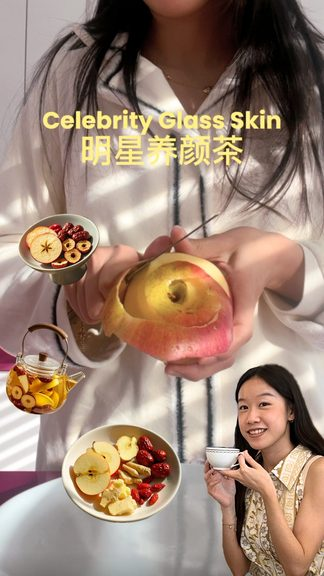
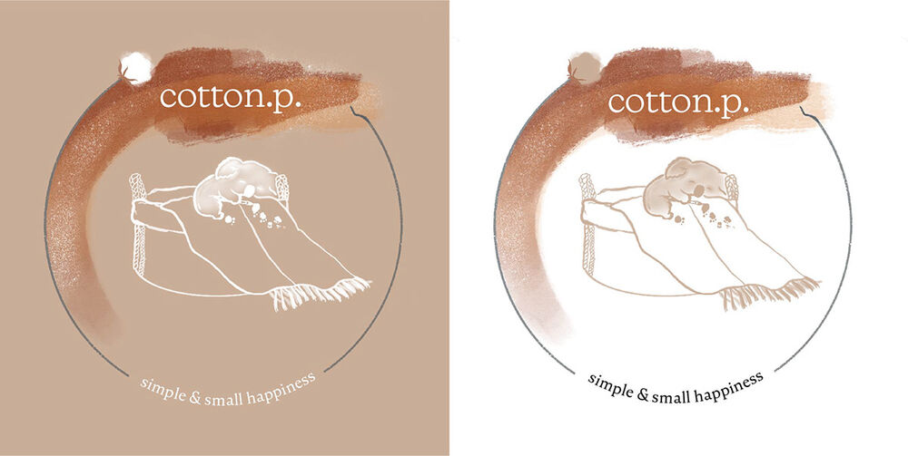

About
Granddaughter first我是誰
Chinese at home, French everywhere else, she grew up between both. Now she makes content about slow living, Traditional Chinese Medicine and family tradition. She's not a doctor: she shares what she's learning, sourced and labelled.
Origin
I was born and raised in France, into a Chinese family, third generation. I grew up holding two cultures at once, and for a long time the thing I understood least was my own body: skin that wouldn't settle, periods that ran my month.
The turn
Looking for a gentler way to live is what led me to Traditional Chinese Medicine, slow rituals and the Chinese habit of slowing down. I started reading, cooking differently, changing how I rest, and filming it as I went.
The work
I make this so people going through the same thing know they aren't alone in it, and so Asian tradition gets shown as something beautiful and worth learning, rather than something unfamiliar and hard to understand.
- 社Social & community: influencer marketing and community management in hospitality, across Switzerland and Japan.
- 設Graphic design & branding: visual identity, illustration and packaging for cafés, hospitality brands, fashion labels and engineering studios — full range at S.W.shop portfolio.
- 醫TCM study: working through Fundamentals of Chinese Medicine (Pan Yi) and continued reading; writes from her own health journey, not secondhand research.
Real engagement, not just reach
小紅書 · RedNote
@iris_youAudience, by age
Where they're watching from
Five content pillars
What the account already runs on, week to week.

Body
Herbal kitchen, skin, women's health
Language
One shoot, two languages
Every video is filmed in Chinese, then captioned in Traditional Chinese or English from the same shoot, so the same footage reaches Chinese-reading and Western audiences without filming twice.
- Captions land natively for Chinese-reading audiences
- Stays clear and readable for Western audiences
- Same footage, two caption sets, one shoot
- French-language cut available on request
One shoot pays for both markets.
Selected Work
Two ways I tell a story
Every brief gets one of two treatments, sometimes both. Pick a lane, or mix them across a campaign.
Clear information, on camera, built to teach and to convert.


02 · 中醫, lifestyle & playful
Slower, personal, true to her own voice: the clips that build real connection, not just views.


Each card opens the real reel on Instagram, with sound.
Also Her Hand
The eye behind the camera is a trained one
Before the content, there was the craft: visual identity, illustration and packaging for cafés, hospitality brands and fashion labels, under her own studio, S.W.shop.



What I Make
Three ways to work together
Pick a route, or combine them across a campaign.
01
UGC & licensing
I create. You post.
- Product showcase & unboxing
- Testimonial & review
- Demo & tutorial
- Tips & tricks explainer
- Before & after
- Script-read & voiceover
- Lifestyle photography
- Hooks, CTAs & raw footage
Best for ad testing · product pages · email marketing
Ask about this →02
Influencer partnerships
I create. I post.
- Dedicated or integrated reel
- Educational carousel
- Story sequence
- Collab post, both grids
- Image + text post
- Native video post
- Giveaway hosting
- Multi-platform bundle
Best for launches · niche trust · bilingual reach
Ask about this →03
Long-term
Ongoing, not one post.
- Ambassador, 3 / 6 / 12 months
- Monthly retainer
- Affiliate link or code
- Hosted stay or retreat
- Store & event coverage
- Founder interview
- Workshop or tea ceremony
- Brand consulting
Best for repeat presence · exclusivity · long-term trust
Ask about this →Open to other formats, on request.
Usage Rights
Four licence levels
Production and licensing are quoted separately, so you always know what you're paying for. Every licence has an end date.
Add-ons Extra hooks & CTAs · Restructured edits · Aspect-ratio resizing · Raw footage · Extra language · Rush delivery · Refilms · Category exclusivity · Performance report
Why Me
What this means for your brand
Two languages, one shoot
Filmed in Chinese, then captioned in Traditional Chinese or English from a single shoot, reaching Chinese-reading and Western audiences with the same asset.
Real roots, not a theme
Her content covers slow living broadly, not only grandmother's kitchen, but the Chinese heritage running through it is real, not a trend borrowed for the camera.
Curious, not clinical
TCM explored out of personal curiosity and her own health journey, not professional practice or medical advice.
An audience already looking for this
Tea, TCM, slow design, heritage, slow travel: brands in these categories reach people who already care, not a broad audience left to convince.
How It Runs
Brief to delivery
- Brief
- Quote
- Concept
- Film & edit
- Deliver
Turnaround and revisions confirmed upfront, so there are no surprises after the shoot.
Let's Work Together
一起合作，慢慢來
Send a brief, timeline, product and the usage rights you need.
- @your.asiangranny
- 小紅書 · RedNote
- @iris_you
- Design portfolio
- soobakworkshop.myportfolio.com